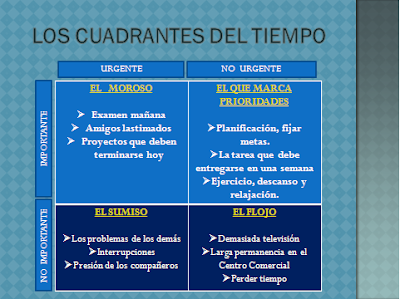

Los 7 habitos de los adolescentes altamente efectivos
PONER PRIMERO LO PRIMERO
Se trata de aprender a establecer prioridades y administrar nuestro tiempo para que las cosas más importantes sean las primeras, y no las últimas. Pero también aprenderemos a sobreponer nuestros temores y ser fuertes durante los momentos difíciles. Esto nos ayudara a llevar ujna secuencia de acciones y así el tiempo nos quedará bien para todo.
Los Cuadrantes del Tiempo:
El modelo de los cuadrantes del tiempo, puede ayudarnos a acomodar más cosas en nuestra vida diaria (especialmente las más importantes), Está compuesto de dos ingredientes primarios: "importantes" y "urgente". Importante: las cosas más importantes, y que deben ir primero, actividades que contribuyen a tu misión y a tus metas. Urgentes: cosas apremiantes, que no pueden esperar, actividades que exigen atención inmediata.
Significado de cada Cuadrante:

Cuadrante 1: El Moroso
Conoce al moroso, que se la vive en el C1 (Cuadrante 1). El lema del moroso es "Dejaré de ser moroso alguna vez". No esperes que haga una tarea o estudie para un examen sino hasta una noche antes. El moroso es adicto a la urgencia. Le gusta dejar las cosas para después hasta que se convierte en una crisis.

Cuadrante 2: El que Marca Prioridades
El C2 (Cuadrante 2)esta hecho de las cosas importantes pero no urgentes, como descansar, formar amistades, hacer ejercicio, planificar anticipadamente y hacer la tarea a tiempo. Es el cuadrante de la excelencia, y el lugar en donde queremos estar. Las actividades del C2 (Cuadrante 2)son importantes pero no urgentes, por eso se nos hace tan difícil llevarlas a cabo.

Cuadrante 3: El Sumiso
El C3 (Cuadrante 3) representa cosas que son urgentes, aunque no son importantes. Se caracteriza por tratar de complacer a los demás y tratar de complacer todos sus deseos. El C3 (Cuadrante 3) está lleno de actividades importantes para los demás, pero no son importantes para ti, cosas a las que te gustaría negarte, pero no puedes porque temes ofender a alguien.
Cuadrante 4: El Flojo
El cuadrante 4 es la categoría del desperdicio y el exceso. Estas actividades no son importantes ni urgentes. Conoce al flojo que se la vive en el C4. Todo le gusta en exceso: demasiada televisión, dormir demasiado, juegos de video, o demasiado internet. Es un flojo profesional. Suele dormir hasta el mediodía, y la escuela es lo último que le importa.